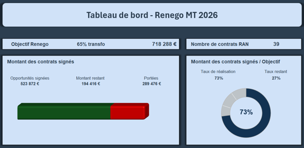
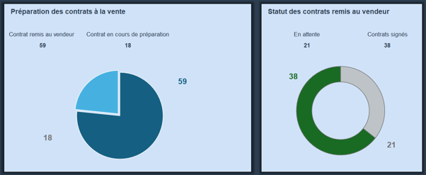
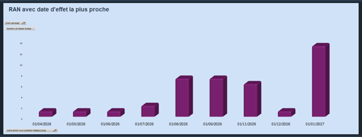

Le lien EDF / Finance
Piloter une renégociation chiffrée demande la même rigueur qu'un projet financier.
Portfolio Numérique — Soutenance BUT Techniques de Commercialisation
BUT TC — Alternant Chargé d'Appui Commercial B2B chez EDF
Entre négociation commerciale et pilotage financier, je construis mon expertise chiffrée chez EDF.
Précision et logique dans l'analyse des données.
Sens du contact client et des enjeux commerciaux.
Simplifier une donnée complexe en décision claire.
Pilotage d'un an de la renégociation de 87 contrats de maintenance de transformateurs haute tension, de l'extraction des données jusqu'à la signature client.



Piloter une renégociation chiffrée demande la même rigueur qu'un projet financier.
Comptabilité approfondie, ingénierie financière et pilotage de la performance.
Contrôle de gestion junior, analyste financier ou gestion de la performance.
Négociation, besoin client, création de valeur.
Chez EDF, la performance se jouait dans les chiffres : ROI, marge, CA.
Major de promo en Analyse Financière — 1ᵉʳ / 145.